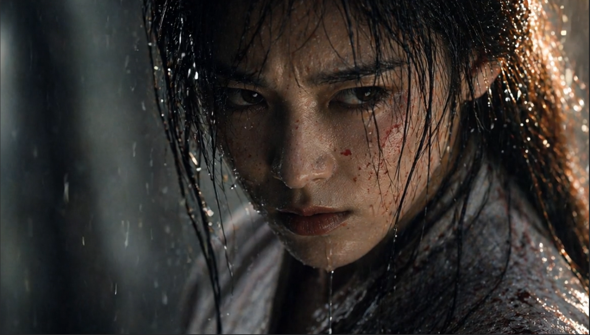
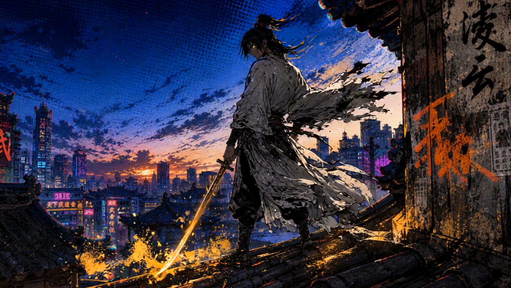
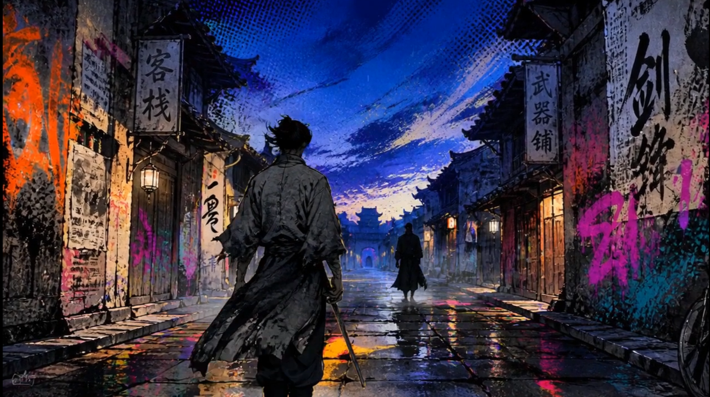

刘正武52Kiol
AIGC/影视混剪/视觉设计/音乐后期制作/个人主页定制
AIGC视频
AIGC日风短片
原创日式风格短片
AIGC武侠风特写镜头
江湖美学 · 侠客行
AIGC霓虹江湖
东方水墨笔触 · 现代街头视觉
AIGC心随风动
太过在意 便会失去本心
AIGC寒江孤影
孤舟 · 江雪 · 独酌
影视混剪
玛丽亚 你为什么总是悲伤
电影美学 · 镜子
我们本不该依赖别人 即便彼此相爱
电影美学 · 牺牲
来自双城的暴力美学
双城之战2 · 混剪高燃
音乐
我只是你的过客#刘正武/于嘉懿/何雨南
爱能打破时空但跨不过距离#刘正武
不合时宜的遇见#刘正武/王子明
图片

教室社团
Super 16mm
女侠
武侠人物
水墨武侠 1
水墨写实
水墨武侠 2
水墨写实抽烟 · 后巷
抽烟 · 后巷
miniDV教室 · 窗边
教室 · 窗边
Super 16mm分镜
浪客行
巷口 → 现身 → 断骨 → 离去
窄巷中浪客与疤面刀客的 33s 完整对决，四段连续分镜。固定机位一点透视，水墨写实风格。
交错 MV
城市醒来 → 桥上 → 雨 → 电车 → 长椅
日式复古胶片 MV，男女主同城始终错过。岩井俊二式关系影像，记忆式剪辑。
镜头链
桥上四镜：远景 → 中景 → 近景 → 特写
高潮段叙事链，两人在桥上的三步距离——接近、停在同一空间、失之交臂、倒影目送背影。
人物卡
浪客行
浪客
精瘦身形，28岁，灰白旧布交领短衣。黑发乱遮半脸，剑挂右腰。井上雄彦水墨写实风。
浪客行
疤面刀客
壮实体型，35岁，墨黑短衣，左脸火焰状烧伤疤痕瓷白。原为寨中首席刀手。
纵横
武
18岁少年，精瘦未满。灰白短衣，体内金色涂鸦式内力暴走。瞳孔从褐变金。